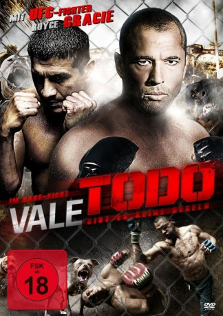

 
 IMDB-Wertung: 6.2 / 10
IMDB-Wertung: 6.2 / 10  Metascore:
Metascore: 
“Vale Todo” ist die Geschichte zweier Männer, die beide ein mühevolles Leben führen. Andre ist ein depressiver Sport Agent, der nach Ecuador zurückkehrt, um sein Leben wieder in den Griff zu bekommen. Vincent, ein verbitterter Tagelöhner. Er rettet Andres Leben während eines Überfalls und Andre erkennt schnell Vincents Ausnahmetalent im Boxen. Er bietet ihm an, mit dem legendären Royce Gracie zu trainieren, um am Ultimate Fighting Championship in Las Vegas teilzunehmen. Alles geht – es gibt nichts zu verlieren!
Jahr: 2010
Dauer: 90 Minuten
FSK: 18
Land: USA Studio: Maya EntertainmentTonspuren:
Untertitel:
Auflösung: 1080p (1920x1080) Größe: 4833 MB
Regisseur: Roberto Estrella
Drehbuch: Christopher Andrews, Roberto Estrella
Soundtrack: Juan Zevallos
Darsteller:
Datei: X:\FSK18-2010\Vale todo Anything goes (2010, FSK18, 1920x1080) 3D.mkv seit 15.11.2018
Festplatte: FSK18
 Es gibt insgesamt 35 Filme in der Gruppe 'FSK18-2010'
Es gibt insgesamt 35 Filme in der Gruppe 'FSK18-2010'